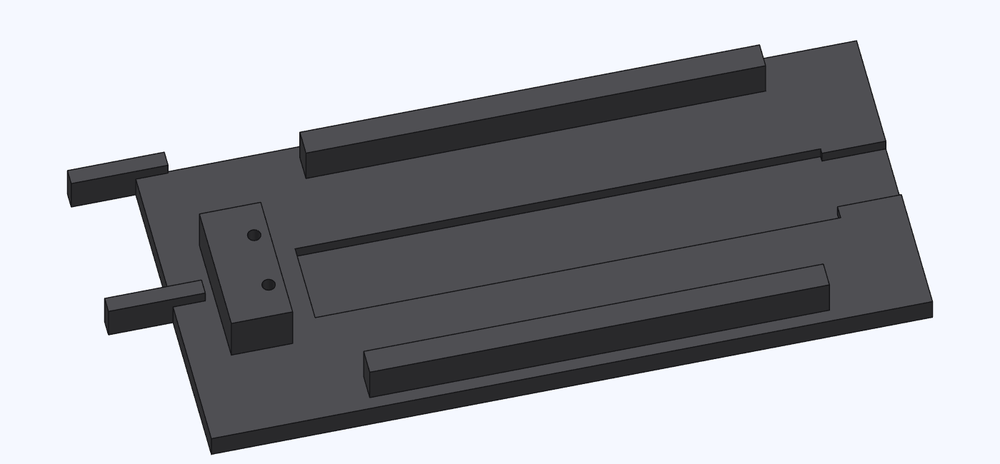
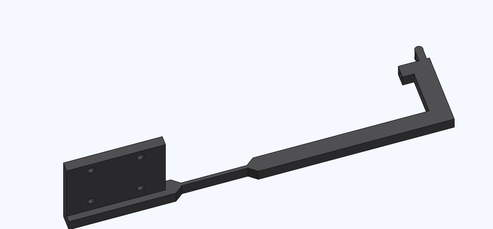
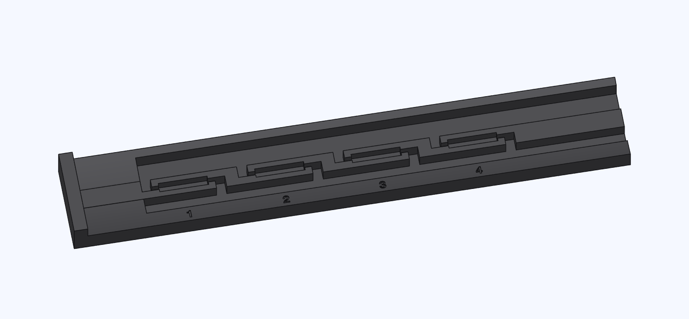
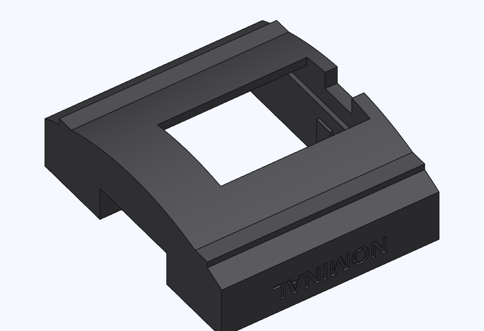

Print the cradle and small parts
Print both prepared plates for your printer in black PET-GF. The projects include the part orientations and support settings.




Small-parts plate
The rod, comb and all three sleds share one plate. Both prepared plates print without supports.
Before heat-setting
The comb drops fully into its pocket. Clear stray strands from the reed pockets, sled slots and gauge windows. Keep the sleds' runner edges square.